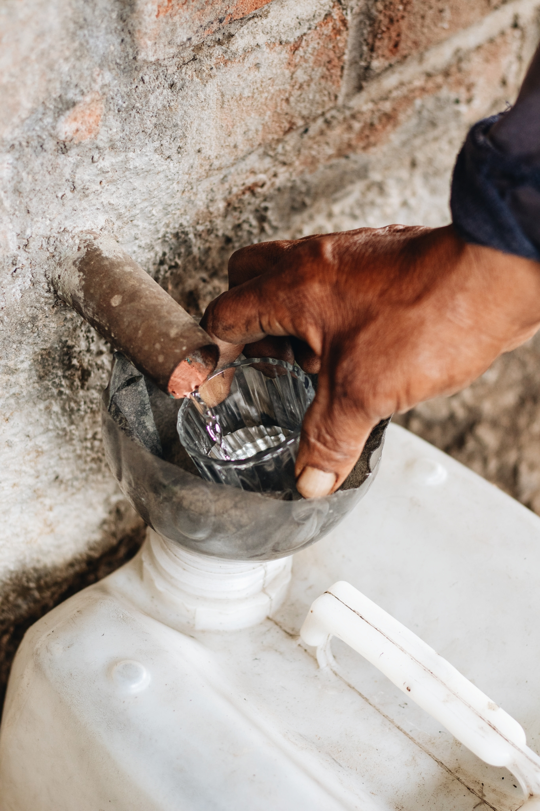

Historia de la marca
Somos una empresa fundada en el año 2020, conformada por la Garcia Guzmán,
originaria de la comunidad de San Dionisio Ocotepec, Oaxaca; quienes hemos
crecido orgullosamente bajo el entorno campesino y heredado
la tradición del mezcal artesanal de 3 generaciones.
Día con día trabajamos en impulsar la preservación de la biodiversidad de la flora
y los agaves silvestres de nuestra comunidad,logrando con esto el mejor mezcal artesanal.
Nuestro Proposito
En NARELI Mezcal, nos enorgullece ser parte de la vibrante comunidad de San Dionisio Ocotepec, Oaxaca. Nuestro propósito va más allá de simplemente producir mezcal artesanal;
estamos comprometidos con el bienestar de nuestra comunidad y el cuidado de nuestro entorno natural.Valoramos profundamente nuestro entorno natural y nos esforzamos por operar de manera sostenible y respetuosa con el medio ambiente. Desde la selección de los agaves hasta el proceso de
destilación, nos comprometemos a minimizar nuestro impacto ambiental. Nos aseguramos de que nuestros agaves se cultiven de manera responsable, utilizando prácticas agrícolas que preserven la biodiversidad y promuevan la regeneración del suelo. Creemos en el poder transformador del apoyo comunitario. Es por eso que colaboramos estrechamente con los agricultores locales, brindándoles un trato justo y apoyándolos en el cultivo
sostenible de agaves. Además, nos comprometemos a reinvertir en nuestra comunidad, contribuyendo al desarrollo económico y social de San Dionisio Ocotepec a través de programas de capacitación, educación y mejora de infraestructuras.
Nos esforzamos por operar de manera ética y transparente en todos los aspectos de nuestro negocio. Valoramos la equidad y la justicia en nuestras relaciones con los agricultores, empleados
y clientes. Buscamos crear oportunidades equitativas para todos los miembros de nuestra comunidad, fomentando un ambiente de respeto mutuo y colaboración.En NARELI Mezcal, nuestro compromiso va más allá de la producción de mezcal. Estamos dedicados a construir un negocio que refleje nuestros valores de sostenibilidad, apoyo comunitario
y equidad. Juntos, trabajamos hacia un futuro más próspero y sostenible para todos.
Proceso de Produccion
SIEMBRA
Se elige cuidadosamente el lugar donde se sembrarán los agaves espadín. Este lugar debe tener las condiciones adecuadas de suelo y clima para el crecimiento óptimo de la planta.
Antes de la siembra, el terreno se prepara adecuadamente. Esto puede incluir la limpieza del suelo, la eliminación de malezas y la nivelación del terreno para facilitar el cultivo.
Los hijuelos, que son las pequeñas plantas de agave que crecen alrededor de la planta madre, se seleccionan para la siembra. Estos hijuelos se cortan cuidadosamente de la planta madre
para ser trasplantados.Los hijuelos seleccionados se trasplantan en el terreno preparado a una distancia adecuada unos de otros para permitir un crecimiento óptimo.
Después del trasplante, los agaves espadín requieren riego regular y cuidado constante durante los primeros meses para asegurar su crecimiento saludable.
Esto puede incluir el control de malezas, la protección contra plagas y enfermedades, y la aplicación de fertilizantes orgánicos si es necesario.
Los agaves espadín requieren varios años para alcanzar la madurez óptima para la cosecha. Durante este tiempo, los agricultores monitorean de cerca su crecimiento
y desarrollo, asegurándose de proporcionar las condiciones adecuadas para su crecimiento.Una vez que los agaves espadín han alcanzado la madurez adecuada, generalmente entre 7 y 10 años, están listos para la cosecha. En este punto, se cortan las pencas (hojas) de la planta para revelar el corazón, o piña, que es la parte utilizada para la producción de mezcal.
Es importante destacar que el proceso de siembra del agave espadín requiere un cuidado meticuloso y un conocimiento profundo del cultivo para garantizar una cosecha exitosa.La calidad del agave y, en última instancia, del mezcal producido, depende en gran medida de cómo se maneje este proceso desde el principio.
JIMA
Pasan entre 6 y 8 años para poder cosechar nuestros agaves. Una vez listos, los jimadores se encargan de extraerlos y quitarles las pencas
hasta dejar solo las piñas o el corazón del agave, que después será colocado en el horno.
COCCIÓN
En este punto nos encargamos de que la cocción se realice únicamente en hornos cónicos de piedra. Las piñas son colocadas bajo tierra con una base de leña y piedras
de río calientes, lo que da el sabor característico y tradicional de un mezcal artesanal. Ahí, tanto las piedras de río como las piñas permanecen hasta cocerse de 5 a 6 días.
MOLIENDA
El siguiente paso es la molienda, ésta se hace con tahona chilena, un proceso en el cual se utiliza una pieza circular en forma de rueda (pesa entre 1 y 2 toneladas) que gira alrededor de un eje y, de esa forma,
cuando pasa sobre las piñas cocidas, exprime y saca todo el jugo del agave. Es un proceso lento y de mucha dedicación que logra extraer las mieles del agave para enfatizar su sabor y consistencia.
FERMENTACIÓN
Una vez triturado el agave, ocurre la fermentación en tinas de madera de pino al aire libre. Gracias a bacterias y principalmente levaduras, que se alimentan de las mieles del agave, se nivela la acidez, dulzura
y aromas del líquido. Son los maestros mezcaleros, quienes con base en su experiencia, deciden en qué momento parar este proceso para dar paso al siguiente.
DESTILACIÓN
Finalmente, hacemos una destilación doble en alambique de cobre para así obtener el líquido que con todas las letras puede llamarse MEZCAL ARTESANAL.

ENVASADO
Ahí termina la labor de los maestros mezcaleros, el mezcal artesanal pasa a la planta de envasado, en donde nos cercioramos de tener el tono justo que caracteriza a cada una de nuestras etiquetas. Una vez con el balance correcto finalizamos con un cuidadoso proceso etiquetando a mano botella por botella.